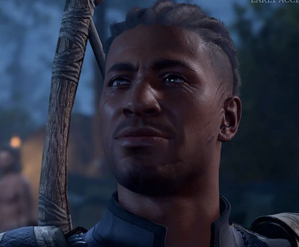

STR: 8 | DEX: 13 | CON: 14 | INT: 13 | WIS:10 | CHA: 17
Wyll is a human warlock who made his name as a renowned hero in Baldur's Gate. But to become a living legend, he struck a bargain with a devil, a bargain from which he longs to break free before it consumes his soul for good. Noble by birth, Wyll made his name as the heroic 'Blade of Frontiers'. He keeps his pact with a devil well-hidden, and is desperate to escape the hellish bargain - even if that means rescuing the seductive creature that made the deal. Wyll will first be encountered during the Goblin Raid for Druid's Grove in Act I.